项目七 PhotoShop的使用
一、实验目的
PhotoShop是Adobe公司推出的图像处理软件，功能十分强大。本次实验的目的是了解图像的基本概念，熟悉PhotoShop CC 2018简体中文版的主界面和基本操作方法，掌握各种工具的使用以及图层、路径等的应用，基本具备应用PhotoShop软件创作设计艺术作品的能力。
二、实验内容
1.熟悉PhotoShop的工作界面及基本操作。
2.熟悉PhotoShop常用的面板、基本工具的使用，以及图层、滤镜等的应用。
三、实验步骤
1.制作背景
1）打开一副花卉图片“雏菊.jpg”文件，注意图像格式为RGB（可通过“图像|模式|RGB颜色”命令设置）。使用菜单命令“图像|图像大小”，在弹出的对话框中将图像大小设置为800×568像素。
2）选择菜单“滤镜|模糊|高斯模糊”命令，打开“高斯模糊”对话框，设置半径为5.0，如图6所示。
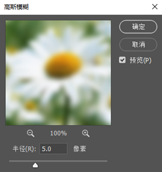 
图7“高斯模糊”对话框 图8 高斯模糊效果
3）选择“滤镜|滤镜库|纹理|拼缀图”菜单命令，弹出“拼缀图”对话框。设置“方形大小”为4，“凸现”为8，点击“确定”按钮，如图9所示。
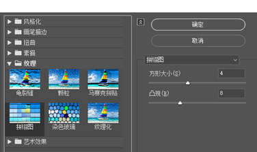
图9“拼缀图”对话框 图10 “拼缀图”效果
4）按Ctrl+A选择整幅图像，再使用菜单“选择|修改|边界”命令，在弹出的“边界选区”对话框中，设置“宽度(W):”为50像素。
5）使用菜单“选择|修改|羽化”命令，弹出的“羽化选区”对话框中设置“羽化半径(R):”为15像素。
6）按Ctrl+X键删除选区内的全部内容，形成白色的羽化边缘，如图11所示。
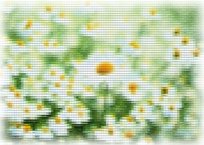
图11 白色羽化边框
2.文字处理
1）在左侧工具箱中点击“文字”按钮并向右拖动，在弹出的菜单中选择“横排文本工具”，如图12所示。
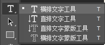
图12 “文字”工具组
2）在文字属性工具栏中，设置字体为“华文彩云”，字号为72点，字体颜色为深绿色（R:0 G:60 B:0），如图13所示。输入文字“有 一 种 想 念。。。”，并将文字拖放到合适的位置。
图13 文字属性工具栏
3）单击图13工具栏中“创建文字变形” 按钮，在弹出的“变形文字”对话框中设置样式为“波浪”，弯曲50%，水平扭曲20%，垂直扭曲-10%，如图14所示。
按钮，在弹出的“变形文字”对话框中设置样式为“波浪”，弯曲50%，水平扭曲20%，垂直扭曲-10%，如图14所示。
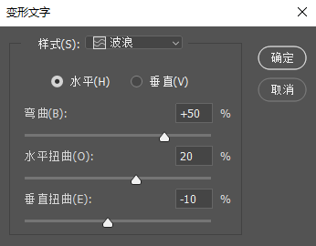
图14 “变形文字”对话框
4）选择菜单“图层|图层样式|斜面和浮雕”命令，在弹出的“图层样式”对话框中设置“样式”为“外斜面”，深度为150%，阴影模式的不透明度为70%。其他参数的设置如图15所示。
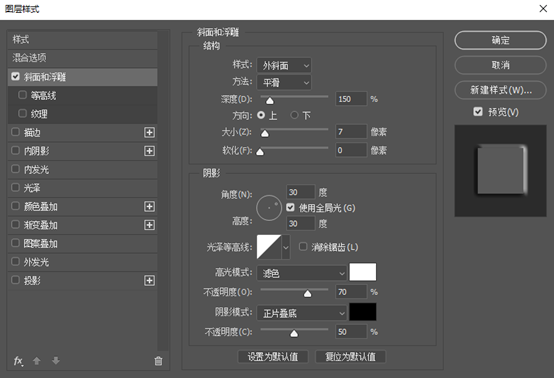
图15 “图层样式”对话框
图16 文字效果图
5）文字效果如图16所示。
3.制作蜡烛
1）选择菜单“图层|新建|图层...”命令，新建一个图层。左边的工具箱中选择“矩形选框工具”，然后在工具条中设置羽化值为2像素，如图17所示。在图像中拖出一个矩形选区（注：蜡烛的形状）。
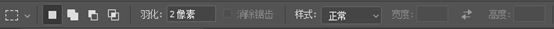
图17 “矩形选框”工具栏
2）选择左边工具箱上的“渐变工具”，并点击工具栏上的渐变条，弹出“渐变编辑器”对话框，如图18。
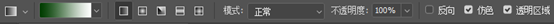
图18 “渐变工具”工具栏
3）设置最左端下面的滑块颜色为RGB(156,156,156)，最右端下面的滑块移动到36%的位置，颜色为RGB(255,255,255)，即灰色到白色的过渡。上端的两个滑块不透明度均为100%。如图19所示。
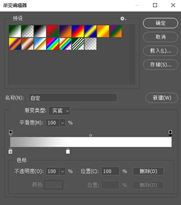
图19 “渐变编辑器”对话框
4）单击“确定”按钮返回，按住鼠标左键并从左到右水平填充蜡烛形选区。
5）选择菜单“图层|新建|图层...”命令，新建一个图层。使用工具箱上的“椭圆选框工具”并将其羽化值设置为2像素。在该图层上拖出一个椭圆形选区（蜡烛火苗）。
6）设置左侧工具箱中前景色为橘黄色RGB（240,160,10）,并使用工具箱上的“油漆桶工具”（与“渐变工具”同组）填充火苗。
7）选择菜单“选择|修改|收缩”命令，弹出“收缩选区”对话框，设置“收缩量”为8像素。
8）利用键盘上的向下键移动选区，和前面的椭圆底部重合，如图20所示。
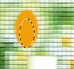
图20 制作蜡烛火苗 图21 蜡烛火苗效果
9）设置前景色为黄色RGB(255,255,0)，再次使用“油漆桶工具”填充选区。并使用工具箱上的“移动工具”，将火苗移动到蜡烛上，效果如图21。
4.照片处理
1）打开一副人像素材“女孩.jpg”（可以是自己的照片），并使用工具箱上的“缩放工具” 在图像上点击1次，将图像放大为200%。
在图像上点击1次，将图像放大为200%。
2）人物的面部有许多小的斑点，可以使用“仿制图章工具”将这些斑点去掉。在工具箱中选择该工具，这时鼠标将显示一个图标的形状，并在工具栏中设置其画笔的大小为8px，硬度0%，如图22所示。
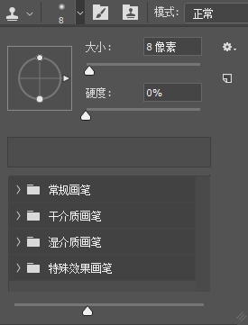
图22 “仿制图章工具”工具栏
首先将鼠标移动到图像中要复制的地方准备取样。按Alt键的同时单击鼠标键，选取要取样部分的起始点（注意：该取样点的图像应与要覆盖的斑点处接近）。
松开Alt键，移动鼠标到要覆盖的斑点处，按下鼠标键。可以看到，该处的图像被取样点的图像覆盖（此时取样点处用十字形表示）。也可以按下并拖动鼠标键来复制连续的图像。
采用以上操作，来去除面部其他较大的斑点，必要时可以使用Alt+单击鼠标键来重新取样。
3）在左侧工具箱中选择“椭圆选框工具”，用鼠标在人像头部拖出一个椭圆形选框（注意：将图像的面部都包含在选框内），如图23所示。选择菜单“图层|新建|通过拷贝的图层”，创建一个新的图层“图层1”。
4）选择菜单“滤镜|杂色|中间值”命令，在弹出的中间值对话框中将半径设置为3像素，如图24所示。
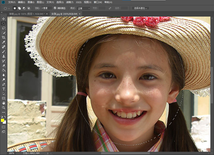 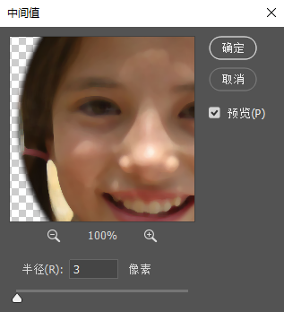
图23 建立椭圆形选框 图24 “中间值”对话框
5）选择菜单“滤镜|模糊|特殊模糊”命令，打开“特殊模糊”对话框并设置半径为70，阀门为8，高品质，如图25所示。
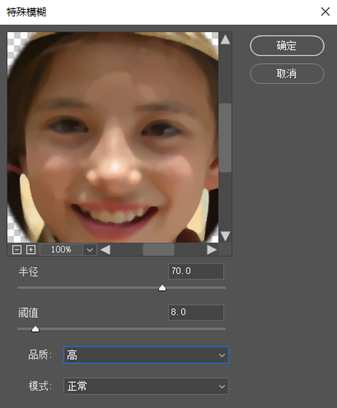
图25 “特殊模糊”对话框
6）在“图层”面板中单击下方的“添加图层蒙板” 按钮，为图层1添加图层蒙板。
按钮，为图层1添加图层蒙板。
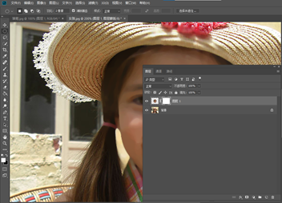
图26 添加图层蒙板
7）设置前景色为黑色RGB(0,0,0)，并选择“画笔工具”。在工具栏中设置大小为13，硬度为0，如图27所示。
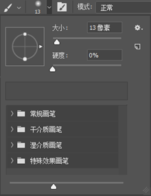
图27 “画笔工具”工具栏
8）用黑色画笔对人物眼、嘴、头发、耳朵、轮廓等处进行涂抹，使人物五官恢复清晰，如图28所示。
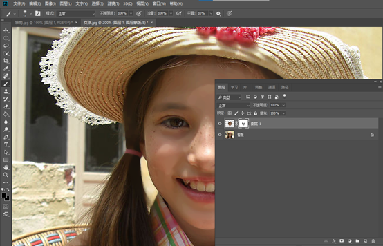
图28 画笔涂抹后效果图
9）在“图层”面板上单击右键，弹出的快捷菜单中选择“合并可见图层”，将两个图层合并起来。选择“缩放工具” 并在工具栏中选择“实际像素”按钮，将图像显示为原始大小。
并在工具栏中选择“实际像素”按钮，将图像显示为原始大小。
10）选择菜单“图像|图像大小”命令，将图像修改为400×354像素。使用“椭圆选框工具”在人像头部中拖出一个椭圆形选区（可利用键盘上的方向键移动选框到适当的位置）。
11）按“Ctrl+C”键复制选区，再打开前面的“雏菊.jpg”图，按“Ctrl+V”键粘贴。使用工具箱中的“移动工具”，将人物图像移动到适当的位置，效果如图29所示。
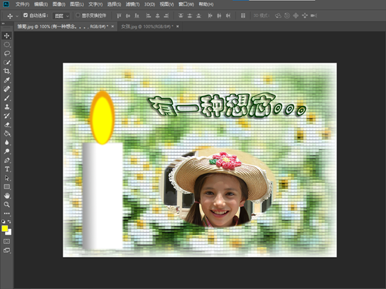
图29 添加人物图像
12）选择菜单“编辑|自由变换”命令，修改椭圆图像的大小，并旋转到合适的方向。
13）选择菜单“图层|图层样式|斜面和浮雕”，打开“图层样式”对话框。在对话框中设置样式为“枕状浮雕”，深度400%，大小30像素，软化5像素，阴影颜色为RGB(160,100,10)，其他参数设置如图30所示。
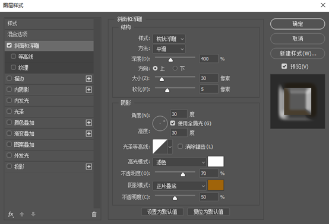
图30 “斜面和浮雕”对话框
14）使用“Ctrl+V”键在原图上再复制一副人物图像。使用菜单命令“编辑|变换|缩放”缩小人物图像。
15）选择菜单“图层|图层样式|投影”命令，打开“图层样式”对话框。在左边的样式列表中，选中“投影”和“内发光”两个选项，且不透明度均为75%，如图31所示。
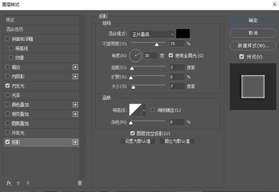
图31 “投影”对话框
16）若两幅人物图像的位置或大小不太理想，可在“图层”面板中选择相应的图层，按照上面的方式对该图层上的人物图像进行修改，效果如图32所示。
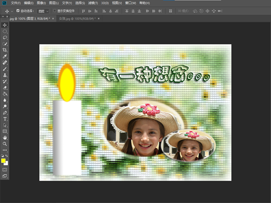
图32 效果图
5.保存图片
选择“存储”按钮，将图片以JPEG的压缩格式保存。
6.自主实验
1）在白纸上写下自己的名字
2）手机拍照，发到自己的邮箱或者qq，并在电脑上接收
3）去掉签名照的底色，将签名叠加到刚刚制作的图片上。
4）调整大小，位置，颜色效果对照片签名。